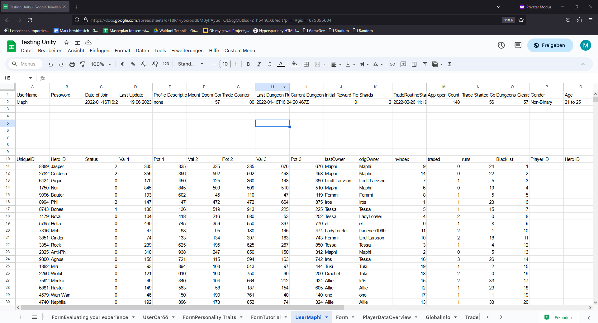

Mount Doom
 itch.io
Github
itch.io
Github
Mount Doom was created for and during the time of my bachelor thesis and the thesis of Frederike Hantschel in 2021/2022.
It was designed as an Idle Game with mobile as it's preffered platform and with a extensive resource and stat system to research aspects about the Idle Game genre.
Players collect Heroes in a Gacha Game like setting and can send them on missions to get more rolls to collect more of them.
Then the player can trade their collected heroes with other players to complete their collection.
The game can be downloaded and played via the itch.io link above, while everything still works the trading functionality is kinda dead since there is no active playerbase :,)
Mobile Idle Game
 The game is split into two main game loops.
The first is the Idle Game, which is the main way for the player to advance their progress.
The player can choose a party of up to four hereos and send them into one of four dungeons.
The stats of the hereoes determine what paths they will take and also how easily they will overcome challenges they have to face.
The higher the difficutly of the dungeon (while the hereos are strong enough for it) the bigger the reward at the end of it, which a rarer new hero and growth for the stats of the party.
The game is split into two main game loops.
The first is the Idle Game, which is the main way for the player to advance their progress.
The player can choose a party of up to four hereos and send them into one of four dungeons.
The stats of the hereoes determine what paths they will take and also how easily they will overcome challenges they have to face.
The higher the difficutly of the dungeon (while the hereos are strong enough for it) the bigger the reward at the end of it, which a rarer new hero and growth for the stats of the party.
The system is designed that players have the chance to put a lot of thought into their decisions on which heroes to take into the party and into which dungeon to maximize their odds to reap good rewards, but at the same time a player who doesn't want to put the effort into it, still gets only positive rewards, whilst in smaller quantity/quality, by just sending whomever wherever.
Technical stuff: The dungeons and the progress are seed based generated, so every step of the adventure can be recreated by the seed and the starting time of the dungeon. This was nice, since there wasn't a need to synch a lot of data with the server, but most importantly, it allowed for accurate estimation about the dungeon progress. These estimations are used to schedule notifications on the mobile systems and to display a neat little progress bar in the game to show the player how long they have to idle around until their heroes are finished with the job.
Online Trading of heroes
 The second loop is the trading of hereos with other players.
To give the player another and a bit more targeted option to advance their collection.
According to the design of the idle game the trading also has a down time phase, where the player can leave the game for a time.
First the player chooses up to four heroes they would like to offer other players. Then they can browse current offers of other players and mark offers they like.
If a player, whose offerngot liked by our example player, likes one of the offers back a match happens.
Both hereos npo longer get shown other players as offers and the next time either player starts their game they will see an animation that their old hero said bye bye and the new one is added to their collection.
The second loop is the trading of hereos with other players.
To give the player another and a bit more targeted option to advance their collection.
According to the design of the idle game the trading also has a down time phase, where the player can leave the game for a time.
First the player chooses up to four heroes they would like to offer other players. Then they can browse current offers of other players and mark offers they like.
If a player, whose offerngot liked by our example player, likes one of the offers back a match happens.
Both hereos npo longer get shown other players as offers and the next time either player starts their game they will see an animation that their old hero said bye bye and the new one is added to their collection.
Since the trading happens online a lot happens on the server side, but since every action gets triggered by an action a player commits (creting an offer, lking an offer, retracting an offer) it doesn't need it's loop running in real time.
Some concerns arrose over what happens if two players diffrent players would match at the same time with an offer. Who would get it?
It was unknown whether the server handles multiple request at the same time or if it strictly does one after the other. If the first one is the case it could happen that both requests would perform the check if the offer is still up and then continue to setting the flagsa that they claimed it resulting in one overwriting the other.
In the end I never managed to force this edge case, but at the same time the logic was implemented that it wouldn't result in a critical error, just that the hero of the double taken offer is in the end duplicated and one of the other heroes is lost for ever.
Google Sheets as Server Backend?

Yes, that's right. Mount Doom uses an online Google Spreadsheet as the backend for it's online features like the trading and account management.
But why?
The biggest reason is probably that I did not create an application with a server before.
I played around with mutliplayer games with a client and host system, but never actually set up a dedicated server and thus did not mingle with the necessary steps.
On the other hand I used already a bit of the scripting features of the Google services and with a little research I found ways to integrate commands to those services within Unity.
With that I had a technology on the hands that I knew how to use and also knew that it would serve the purposes of Mount Doom in terms of scale and speed.
Other beneficial aspects of this approach arose during production:
Since the data needed to be spread out throughout the sheets, it was a very readable visual representation of the server backend, that could also be easily manually manipulated by hand if necessary.
Also I implemented Questionaires via Google forms to gather information for my bachelor thesis and due to the compatibility of the Google App Services in itself it was very easy to implement the questionaires into the game itself and the results were also integrated into the server data.
And lastly the service is free, I don't have to host it myself and therefore it is still up and going! So maybe go check it out?
While it worked out pretty great for it's cause, this approach also showed me the relevancy of dedicated server solutions.
Since the communication was always a URL request from the App to the service the data limitation to synch the game data from the app to the server was very limited and solutions like message splitting had to be built, which in return made the whole thing even slower.
At times the representation of the data in the spread sheets cells got really messy and for every little server command I had to write a bunch of boilerplate code to just allocate the data at the right places in the sheet, which was a huge time sink in the end.
Also the performance was just OK, even for our use case in a pretty chill Idle Game, which didn't need a whole lot of server communication.
So Yeah. Next time I want to dive into something more dedicated.